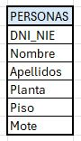
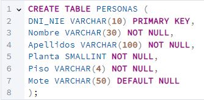
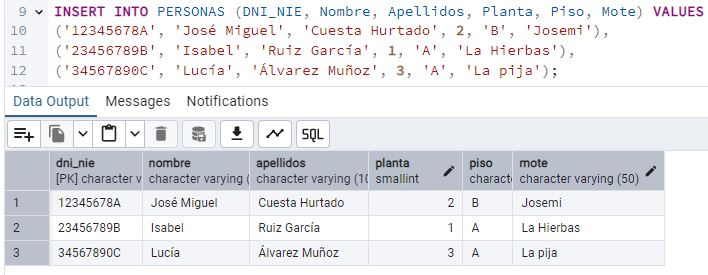
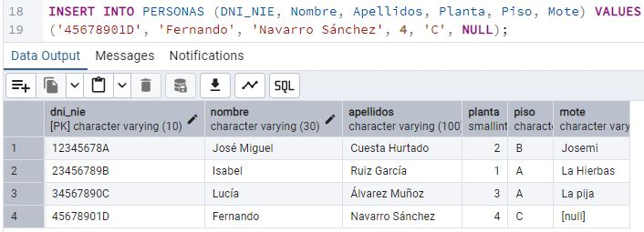
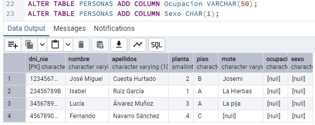
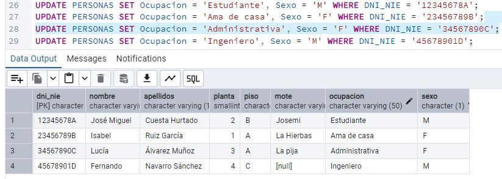
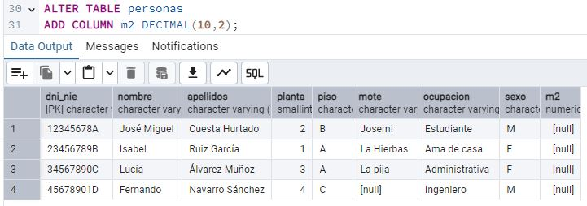

Juan Cuesta, presidente de nuestra comunidad de vecinos, quiere innovar en la gestión de la
misma. Para ello, se propone crear un sistema informático holístico, con la intención de
centralizar información sobre los vecinos, su residencia, el pago de cuotas, su comportamiento
para con la comunidad, etc. Para ello, quiere empezar por la piedra angular de todo sistema de
datos: La base de datos.
Nuestro presidente sabe que no puede empezar a construir una base de datos “sin más”, dado
que, antes de nada, es muy importante conceptualizarla para evitar futuros errores. Por ello,
primero plantea una pequeña especificación del mundo real y conceptual. Sabe que, en una
comunidad de vecinos, la relación (o tabla) principal será, obviamente, una tabla sobre las
personas que viven en ella.
Nuestro presidente propone que, entre los atributos de esta primera tabla “PERSONAS”, se
encuentren los siguiente 4 atributos: DNI, Nombre, Apellidos, Planta y piso. Además, como entre
ellos muchas veces se llaman por el apodo, quiere introducir un 5º atributo: El mote.
Ayuda a Juan Cuesta, presidente de la comunidad, en la creación de esta primera relación
llamada PERSONAS. [1] Dibuja (mediante Excel, draw.io o cualquier herramienta similar)
dicha
relación con sus atributos. Además, [2] señala siguiendo la convención, cuál será la
clave
primaria de dicha relación y justifica su elección. [3] ¿Cómo se representaría
textualmente,
siguiendo el modelo R(A1, A2,..)?
Él ha encontrado, navegando por internet, el siguiente esquema (obviamente de otro caso de uso):
“Estudiante (ID, Nombre, Fecha Nacimiento)”. Una vez diseñado, Juan quiere crear dicha tabla en
PostgreSQL, para empezar a introducir datos. Ahora bien, necesita saber el dominio de cada
atributo. [4] ¿Qué tipo de dato es cada atributo? Justifica tus elecciones.
[5] Haz una sentencia SQL para crear una tabla acorde, en PostgreSQL.
Contento por haber creado su primera tabla, Juan quiere introducir datos sobre los vecinos en la
misma, para practicar. Ha pensado en introducir a su hijo (José Miguel), su actual mujer (Isabel
Ruiz) y una vecina del 3º A: Lucía. [6] Crea las sentencias INSERT necesarias para
introducir dichas
filas en la tabla PERSONAS y ejecútalas. Puedes inventarte los DNI. Pégalas en el reporte, y
también un pantallazo del estado de la tabla. Puedes encontrar información sobre los vecinos
aquí y aquí.
Juan se ha dado cuenta que el atributo “Apodo” no siempre sirve, porque no todos tienen uno.
[7] ¿Qué podría hacer Juan, para insertar una fila sobre un vecino que no tenga apodo?
[8] Busca un vecino que no tenga mote, e introdúcelo en la base de datos.
Pega un pantallazo del estado de la tabla.
Posteriormente, ve que debería haber más atributos importantes. Decide añadirlos más tarde. Sabe
que un ALTER TABLE es costoso, pero PostgreSQL es flexible. Encuentra la sentencia:
ALTER TABLE table_name ADD column_name datatype;.
[9] Ayuda a Juan y utiliza la sentencia ALTER TABLE para
añadir a la tabla los atributos Ocupación y Sexo. Además, Juan quiere introducir estos nuevos
atributos a los vecinos existentes. [10] ¿Qué sentencia debería utilizar para
actualizar esa
información no existente? Escribe las sentencias y pega un pantallazo del estado de la base de
datos.
Durante una junta de vecinos, Concha se queja de que cada piso paga 200€ mensuales sin considerar
los m2 del piso. Se declara morosa. Presionado, Juan decide introducir un nuevo atributo “m2”.
[11] Crea y ejecuta la sentencia ALTER TABLE y pégala en el reporte.
[12] Añade unos m2
a cada vecino, asegurando que Concha tenga el piso con más metros cuadrados. Si varios viven en
el mismo piso, deben tener los mismos m2. Pega un pantallazo de cómo queda la tabla.
Luego ve que no tiene sentido que cada persona repita los m2. Lo ideal es normalizar:
una tabla PERSONAS y otra VIVIENDAS, relacionadas por llave foránea.
[13] Genera las sentencias CREATE TABLE
de ambas tablas (PERSONAS_NORM y VIVIENDAS), distribuyendo los atributos y creando la relación.
Llena ambas tablas con los vecinos ya insertados y pega un pantallazo.
Juan decide ordenar los pisos por m2. [14] Crea una consulta SELECT con ORDER BY para
listar los
pisos de mayor a menor. Pega la query y un pantallazo del resultado.
Al ver que Concha tiene el piso con más m2, esta vuelve a protestar. Juan elimina la columna “m2”
de la tabla VIVIENDAS. [15] ¿Qué query debe ejecutar para borrar dicha columna? Pega
la sentencia
y un pantallazo de cómo queda la tabla.
Una vez borrada la columna, la tabla VIVIENDAS queda casi vacía (solo la clave primaria).
[16] ¿Qué debería hacer Juan? ¿Mantener la tabla, para que esté “muy normalizada”, o
borrarla y volver a meter la planta y el piso en PERSONAS? Explica tu opción elegida con sus
pros y contras (3 argumentos en total).
Por otra parte, Juan nota que en el edificio hay varios tipos de personas: porteros, alquilados
y propietarios. También está José María, que no encaja en ninguna categoría.
[17] Dibuja o esquematiza la tabla PERSONA y la relación con las subclases (Portero,
Alquilado, Propietario). ¿Cómo se llama este diseño?
[18] ¿En qué relación o clase
debería estar José María, al no encajar en ninguna de las subclases?
Finalmente, cansado, Juan decide borrar todas las tablas creadas.
[19] ¿Qué sentencia(s) SQL
debería ejecutar para eliminar definitivamente las tablas de la base de datos?
Luego reflexiona
sobre los continuos cambios que ha hecho sin planificar.
[20] ¿Qué opinas sobre la
última reflexión de Juan Cuesta? ¿Está en lo correcto o exagera?
1 - Dibuja (mediante Excel, draw.io…) la relación con sus atributos.

2 - Indica cuál será la clave primaria de dicha relación y justifica tu elección.
Para la tabla PERSONAS, podemos utilizar DNI_NIE como clave primaria, ya que:
El DNI es un identificador único para cada persona.
Es un dato sin ambigüedades.
Evita las duplicidades, no existen dos personas con el mismo DNI.
En el caso que existieran es un error.
3 - ¿Cómo se representaría textualmente, siguiendo el modelo R(A1, A2,..)?
Representación textual PERSONAS,donde la clave primaria se subraya:
(ID, Nombre, Edad, Ciudad) son los atributos de la relación.
Si ID es la clave primaria, se puede denotar como:
R(ID, Nombre, Edad, Ciudad)* (donde ID* indica la clave primaria).
4 - ¿Qué tipo de dato es cada atributo? Justifica tus elecciones.
DNI_NIE: Utilizaremos VARCHAR(10) permite almacenar DNIs (9
caracteres)
y NIEs (hasta 10 caracteres).
Nombre: Se utiliza VARCHAR(30)porque es una cadena de caracteres
variable y,
generalmente, los nombres no exceden esta longitud.
Apellidos: Se define como VARCHAR(100) para permitir almacenar
apellidos compuestos
o de mayor longitud, garantizando suficiente espacio.
Planta: Se utiliza
SMALLINT o TINYINT (para Microsoft SQL server)permite hasta 32.767 plantas.
No admite nulls.
Si pudiera TINYINT la ventaja es que ocupa 1 byte en lugar de 2
(SMALLINT) o 4 (INT), optimizando almacenamiento.
Sería suficiente para edificios de hasta 127 plantas.
Piso:VARCHAR(4), Puede contener números y letras (Ej: “3A”,
“10B”).
VARCHAR(4) es más flexible que TINYINT o
SMALLINT.
Mote: Se utiliza VARCHAR(50) permite nombres largos sin
desperdiciar demasiado espacio.
Se permite NULL, ya que no todos los vecinos tienen mote.
5 - Haz una sentencia SQL para crear la tabla en PostgreSQL.

6 - Crea las sentencias INSERT para introducir los vecinos (José Miguel, Isabel Ruiz, Lucía).

7 - ¿Qué hacer para insertar un vecino que no tenga apodo?
Si un vecino no tiene apodo, se inserta un valor NULL en la columna Mote.
8 - Inserta un vecino que no tenga mote. Muestra el estado de la tabla.

9 - Utiliza la sentencia ALTER TABLE para añadir Ocupación y Sexo.

10 - ¿Cómo actualizar la información de estos atributos en la base de datos?

11 - Crea y ejecuta la sentencia ALTER TABLE para añadir “m2”.

12 - Añade los m2 a cada vecino. Concha debe tener más m2 que nadie.
13 - Genera las sentencias CREATE TABLE (PERSONAS_NORM y VIVIENDAS) y relaciónalas con una FK.
14 - Crea una consulta SELECT con ORDER BY (m2) para ordenar de mayor a menor.
15 - ¿Qué query elimina la columna “m2” de la tabla VIVIENDAS?
16 - ¿Qué hacer con la tabla VIVIENDAS al quedar casi vacía? Explica pros/contras.
Dado que los datos necesarios a añadir a la vivienda podrían cambiar en el futuro, la mejor opción es mantener la
tabla VIVIENDAS y conservar la relación con PERSONAS_NORM. Aunque en este
momento VIVIENDAS solo tiene Planta y Piso, es posible que en el futuro se necesite agregar atributos como:
M2 nuevamente (si se decide cobrar cuotas por tamaño).
Número de habitaciones y baños (si se decide cobrar cuotas por estas características).
Si la vivienda tiene balcón, terraza o trastero (para servicios adicionales).
Pros de Mantener VIVIENDAS
Escalabilidad → Permite agregar información de cada vivienda sin afectar la estructura de
PERSONAS_NORM.
Integridad de Datos → Evita inconsistencias en Planta y Piso si varias personas viven en el
mismo lugar.
Optimización de almacenamiento → Evita repetir datos en cada persona (si se agregan atributos
como m², solo se almacena una vez por vivienda).
Contras de Mantener VIVIENDAS
Complejidad en consultas → Se requiere JOIN para obtener información completa de personas y
viviendas.
Espacio en disco “desperdiciado” temporalmente → Ahora VIVIENDAS parece innecesaria, pero es
una inversión a futuro.
Mayor esfuerzo inicial → La estructura es más robusta, pero implica más gestión en
inserciones y modificaciones.
Conclusión:
Juan debería mantener la tabla VIVIENDAS, aunque ahora parezca innecesaria. Dado que es una
comunidad “impredecible”, en el futuro podrían necesitarse atributos adicionales por vivienda, como m2,
habitaciones, baños, etc. Además, desde un enfoque de arquitectura de datos y modelado dimensional, eliminar la
tabla VIVIENDAS y poner m2 en PERSONAS_NORM es una mala práctica, ya que rompe varios principios fundamentales en
el diseño de bases de datos escalables y analíticas.
En un entorno analítico o de Data Warehouse, los datos de las viviendas pueden cambiar con el tiempo (reformas que
aumentan m2 o agregan habitaciones). Si m2 estuviera en PERSONAS_NORM, cada cambio en los datos de la vivienda
obligaría a actualizar múltiples filas, lo que:
Rompe la trazabilidad histórica si queremos ver cómo evolucionó la vivienda con el tiempo.
Una vivienda en alquiler puede cambiar de personas varias veces al año.
17 - Dibuja el diseño de PERSONA y subclases (Portero, Alquilado, Propietario)
Juan está enfrentando un caso clásico de herencia o especialización en bases de datos relacionales. Esto se llama
Modelo de Herencia o Especialización (ISA Relationship en modelos E-R), donde una entidad padre
(PERSONAS_NORM) comparte atributos con varias entidades hijas (PORTERO,
ALQUILADO y PROPIETARIO).
La solución:
Crear una jerarquía de especialización para diferenciar PORTERO, ALQUILADO y PROPIETARIO.
Mantener a José María en PERSONAS_NORM sin asignarlo a ninguna subclase.
Explicación del diseño:
PERSONAS_NORM es la tabla base donde se almacenan todas las personas.
Se introduce un campo Tipo para indicar si una persona es Portero, Alquilado o Propietario.
Cada subclase (PORTERO, ALQUILADO, PROPIETARIO) tiene
atributos específicos, referenciando DNI_NIE como clave foránea.
José María se queda en PERSONAS_NORM, pero su campo Tipo será
NULL, ya que no pertenece a ninguna especialización.
Implementación en SQL:
18 - ¿Dónde representamos a José María, que no encaja en las subclases?
José María no encaja en ninguna de las especializaciones (PORTERO, ALQUILADO, PROPIETARIO),
pero sí es una persona que interactúa con el edificio. Por lo tanto, debe permanecer en
PERSONAS_NORM sin asociarse a ninguna subclase.
Si en algún momento se descubre que José María tiene un rol específico en la comunidad,
simplemente se actualiza su Tipo y se añade a la subtabla correspondiente.
19 - ¿Qué sentencias SQL permiten borrar las tablas creadas?
20 - Reflexión final: ¿Qué opinas de las últimas palabras de Juan Cuesta?
La reflexión de Juan es acertada, pero también consideraría, según mi experiencia profesional
(Steven), que el diseño previo es crucial,
pero la flexibilidad y la iteración también son esenciales.
Es cierto que tener un diseño sólido desde el principio (fase de modelado conceptual y lógico) ayuda a evitar
problemas.
En ingeniería de software, el análisis y diseño previos (ej. diagramas E-R, normalización, especificación de
requisitos) son cruciales
para reducir retrabajos.
Modelos flexibles escalan mejor: En Data Warehouse y bases de datos transaccionales, se priorizan diseños
modulares y escalables que
faciliten cambios futuros sin grandes refactorizaciones.
Dicho esto, pienso que ningún diseño es perfecto desde el inicio; siempre habrá ajustes y mejoras.
En construcción, modificar la estructura después de construirla es costoso y a veces inviable, mientras que en
software,
los cambios son esperables y forman parte del ciclo de vida del desarrollo. Robustez +
Flexibilidad.
[REFLEXIÓN Y COMPROBACIÓN 1]
En teoría (sesión/cápsula) hemos explicado que existen dos maneras distintas para introducir restricciones a una
tabla (como puede ser introducir una clave primaria).
Las dos maneras son:
Inline Constraint: Definir la restricción dentro de la declaración de la columna.
Out-of-Line Constraint: Definir la restricción como una cláusula separada al final de la
declaración de la tabla.
¿En qué casos sirve una y no la otra?
Inline Constraint:
Sirve cuando la restricción afecta solo a una columna.
No sirve para restricciones que involucren múltiples columnas.
Ejemplo válido (clave primaria en una sola columna):
Ejemplo NO válido (clave primaria en varias columnas, inline no funciona):
Out-of-Line Constraint:
Sirve cuando la restricción involucra varias columnas.
Es la única opción para definir claves foráneas con REFERENCES.
No es necesaria cuando la restricción es específica de una sola columna y se busca mayor claridad.
Ejemplo válido (clave primaria compuesta, solo funciona out-of-line):
Ejemplo válido (clave foránea, solo se puede definir out-of-line):
Ejemplo de restricción explicado en clase (aparte de la clave primaria):
Se utilizó la restricción CHECK para validar que los valores de una columna cumplan una condición
específica.
CHECK (Presupuesto > 1000) asegura que el valor de presupuesto siempre sea
mayor a 1000, evitando valores inválidos como 0 o -500.
CHECK (Duración > 0) asegura que la duración del proyecto siempre sea mayor a
0. Esta restricción se puede aplicar tanto de forma inline como mediante la cláusula CONSTRAINT
mínimo_1_mes.
[REFLEXIÓN Y COMPROBACIÓN 2] - Restricciones en una tabla
En teoría (sesión/cápsula) hemos explicado un ejemplo
similar al de propietarios, alquilados, etc. ¿Qué ejemplo concreto explicamos? ¿Cuál es el nexo
de todas las tablas que pusimos en el ejemplo?
En la teoría se trabajó con el ejemplo del esquema de una empresa, con la tabla de Empleados (y sus
relaciones con otras tablas como Proyectos y Departamentos). En ese ejemplo se muestra cómo, partiendo de una
entidad principal (Empleado), se pueden relacionar otros conjuntos de datos mediante claves foráneas. Es decir, el
nexo que une todas las tablas es la clave primaria de la entidad principal (por ejemplo, el ID del empleado), que
se utiliza para establecer las relaciones entre las tablas. Esta estructura
es similar a la de propietarios, alquilados, porteros,etc., ya que en ambos casos se parte de una entidad base
(Persona o Empleado) y se extiende la información en
tablas asociadas usando la clave primaria.
La idea es el mantenimiento y simplicidad para tener claras las relaciones entre las tablas y evitar la
duplicación de datos.